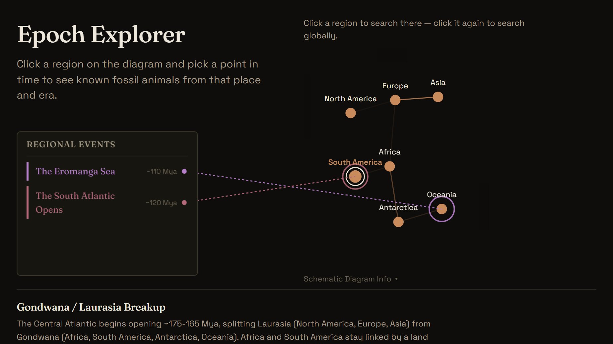

> WEB APP
Epoch Explorer
LivePick a place and a moment in deep time, and meet the animals that lived there.
epochexplorer.earth
> ABOUT
Full-stack web app for exploring prehistoric life. Pick a region on an interactive continental drift diagram and scrub to a point in geologic time, and it returns the fossil animals known from that place and era, complete with taxonomy, ecology, imagery, and a cited source list on every result. Built with Next.js and TypeScript, querying the Paleobiology Database live and caching enriched results in Postgres.
> ARCHITECTURE & DATA PIPELINE
- Live Fossil Data: Queries the Paleobiology Database for occurrences filtered by region, geologic interval, and taxonomic group.
- Enrichment: Each taxon is enriched from several public biodiversity databases for imagery, classification, ecology, and 3D models where they exist, with sources cited on every card.
- Caching Layer: Postgres-backed cache for occurrence lists and per-taxon media, keeping repeat searches fast and keeping load off the public APIs.
- Interactive Timeline: Scrubbable 500-million-year geologic timeline with era colour coding and markers for major extinction and origination events.
- Shareable State: Every search is encoded in the URL, so a specific region, era, and taxon can be linked to directly.
- Stack & Testing: Next.js 14, React, and TypeScript deployed on Vercel, with a deterministic offline test suite plus a separate verification pass that checks the data files against the databases they cite.